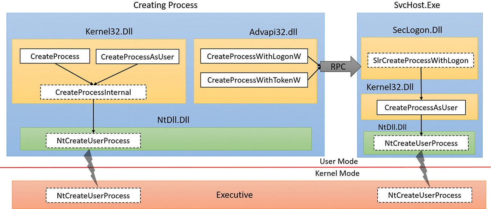
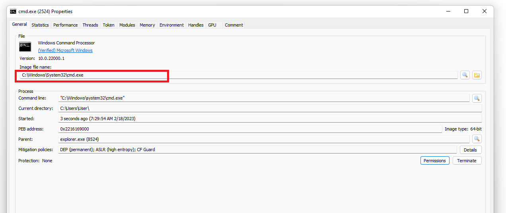
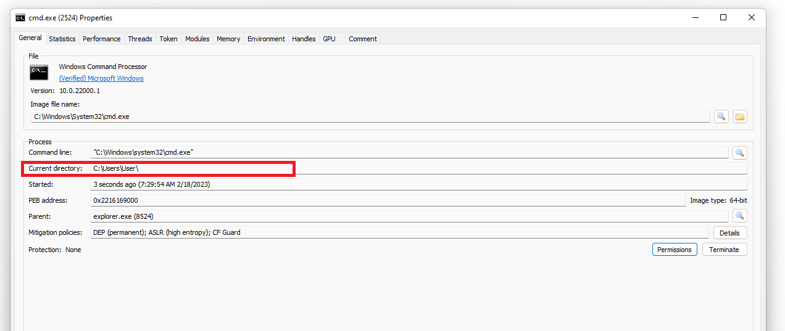
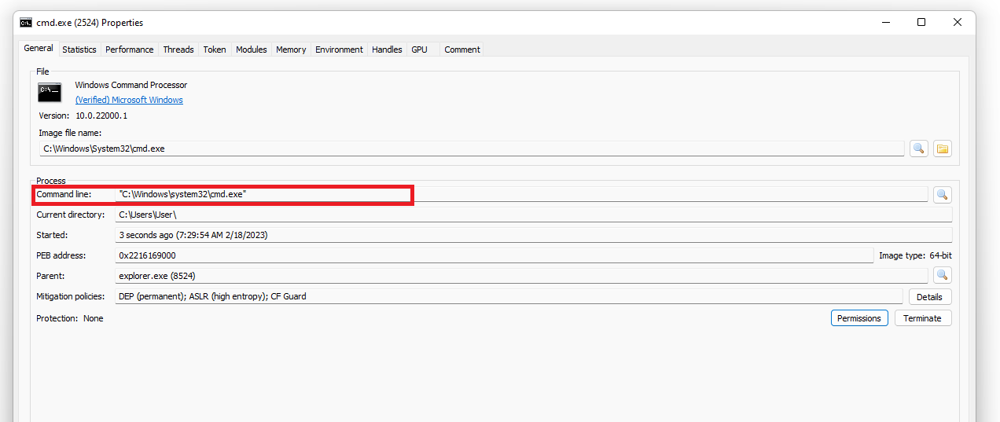
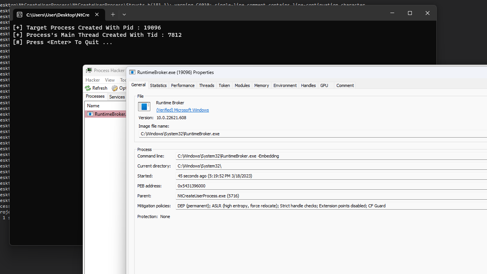
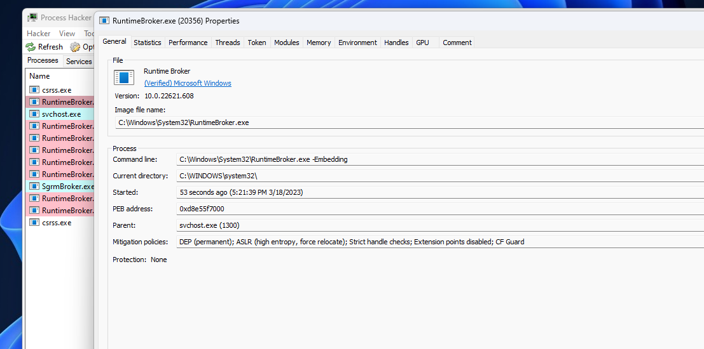
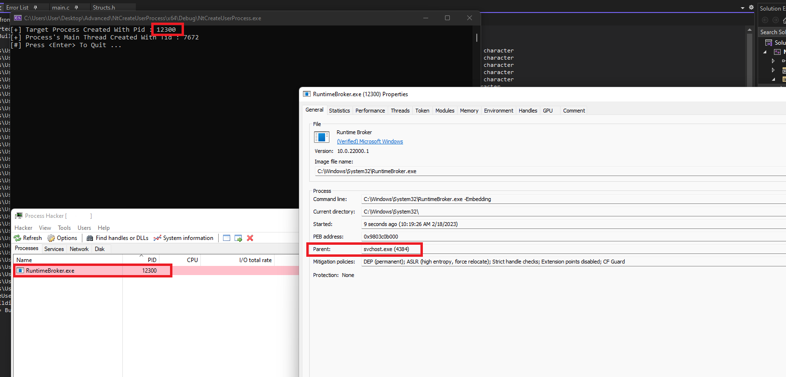
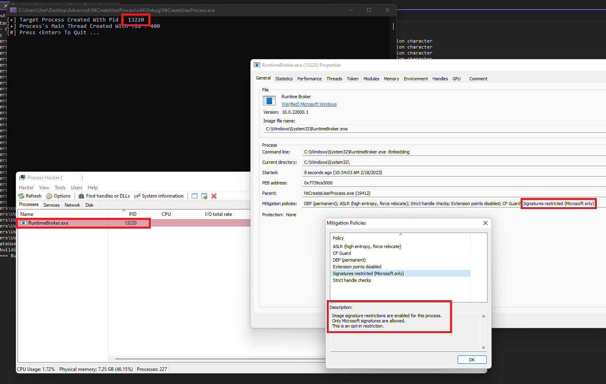
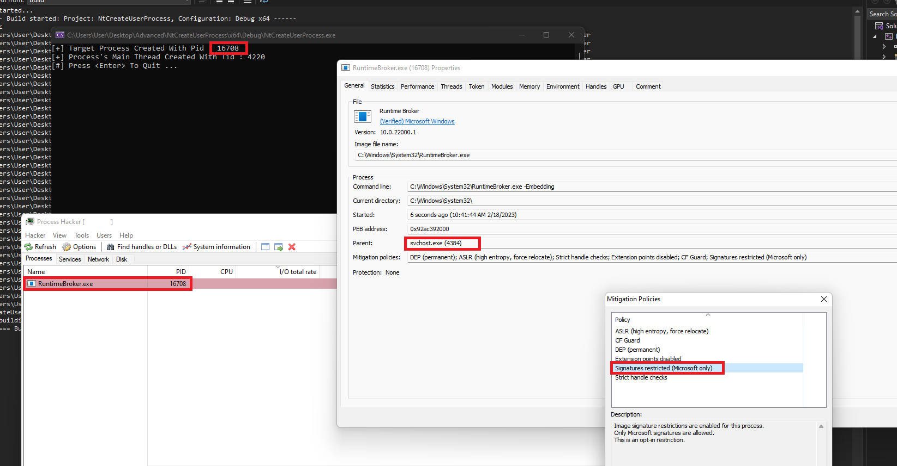

Introduction
Up to this point in the handbook, the CreateProcess WinAPI has been utilized for the creation of new processes. Nevertheless, it is worth noting that the CreateProcess function ultimately invokes NtCreateUserProcess after executing several internal functions, which may be hooked by security vendors. Thus, given the possibility of calling a hooked NtCreateUserProcess through CreateProcess, it becomes obligatory for us to invoke it directly via direct or indirect syscalls as a means of bypassing the potential hook installed.
The following is an image from the Windows Internals 7th edition - Part 1 book, which shows CreateProcess's execution flow. Note that functions marked with dotted boxes are internal functions.

NtCreateUserProcess is the final user-mode accessible function and represents the lowest level CreateProcess can reach before the kernel mode.
NtCreateUserProcess Parameters
The NtCreateUserProcess function is a highly customizable function that has multiple parameters and performs complex operations.
NTSTATUS NTAPI NtCreateUserProcess(
OUT PHANDLE ProcessHandle,
OUT PHANDLE ThreadHandle,
IN ACCESS_MASK ProcessDesiredAccess,
IN ACCESS_MASK ThreadDesiredAccess,
IN OPTIONAL POBJECT_ATTRIBUTES ProcessObjectAttributes,
IN OPTIONAL POBJECT_ATTRIBUTES ThreadObjectAttributes,
IN ULONG ProcessFlags, // PROCESS_CREATE_FLAGS_*
IN ULONG ThreadFlags, // THREAD_CREATE_FLAGS_*
IN OPTIONAL PRTL_USER_PROCESS_PARAMETERS ProcessParameters,
IN OUT PPS_CREATE_INFO CreateInfo,
IN PPS_ATTRIBUTE_LIST AttributeList
);ProcessHandle - A pointer to a HANDLE variable that receives the handle of the newly created process.ThreadHandle - A pointer to a HANDLE variable that receives the handle to the main thread of the newly created process.ProcessDesiredAccess - Determines the granted access to the process handle and is of type ACCESS_MASK. This module will use PROCESS_ALL_ACCESS to grant full access rights to the object.ThreadDesiredAccess - Determines the granted access to the thread handle and is of type ACCESS_MASK. This module will use THREAD_ALL_ACCESS to grant full access rights to the object.ProcessObjectAttributes - This parameter specifies the attributes that can be applied to the process. The attributes are defined using the OBJECT_ATTRIBUTES structure and are typically initialized using the InitializeObjectAttributes macro. For this module, this parameter will be set to NULL.ThreadObjectAttributes - This parameter specifies the attributes that can be applied to the thread. The attributes are defined using the OBJECT_ATTRIBUTES structure and are typically initialized using the InitializeObjectAttributes macro. For this module, this parameter will be set to NULL.ProcessFlags - This is the flag that determines the initial state of the created process. For example, the process could be created in a suspended state or could inherit from its parent process. In this module, this flag will be set to NULL to indicate that the process should be created in a normal state.ThreadFlags - This is the flag that determines the initial state of the main thread. In this module, this flag will be set to NULL to indicate that the thread should be created in a normal state.ProcessParameters - An optional parameter, that points to an RTL_USER_PROCESS_PARAMETERS structure. This parameter describes the process's initial arguments.CreateInfo - This is a pointer to a PS_CREATE_INFO structure that will hold returned information about the created process when the function succeeds.AttributeList - This is a pointer to a PS_ATTRIBUTE_LIST structure. The purpose of this parameter is to set up the attributes of the created process and thread. Recall that these are the same attributes that allow PPID spoofing and block DLL policy.Note that the process name to be created is passed as an attribute using the AttributeList parameter.
PS_ATTRIBUTE_LIST AttributeList
As mentioned above, NtCreateUserProcess's last parameter is a pointer to a PS_ATTRIBUTE_LIST structure.
typedef struct _PS_ATTRIBUTE_LIST
{
SIZE_T TotalLength;
PS_ATTRIBUTE Attributes[1];
} PS_ATTRIBUTE_LIST, * PPS_ATTRIBUTE_LIST;TotalLength - This is always set to the size of the PS_ATTRIBUTE_LIST structure.Attributes - An array of PS_ATTRIBUTE structure.PS_ATTRIBUTE Attributes
typedef struct _PS_ATTRIBUTE
{
ULONG_PTR Attribute;
SIZE_T Size;
union
{
ULONG_PTR Value;
PVOID ValuePtr;
};
PSIZE_T ReturnLength;
} PS_ATTRIBUTE, * PPS_ATTRIBUTE;The following elements should be initialized for every attribute added to the process:
Attribute - Set to the type of attribute.Value - The attribute value.Size: The size of the attribute value (size of Value).The parameters are similar to those used in the UpdateProcThreadAttribute WinAPI function. The main difference is the Attribute member must use one of the values that are specific to the NtCreateUserProcess function. These values are shown below.
// Specifies the parent process of the new process
#define PS_ATTRIBUTE_PARENT_PROCESS \
PsAttributeValue(PsAttributeParentProcess, FALSE, TRUE, TRUE)// Specifies the debug port to use
#define PS_ATTRIBUTE_DEBUG_PORT \
PsAttributeValue(PsAttributeDebugPort, FALSE, TRUE, TRUE)// Specifies the token to assign to the new process
#define PS_ATTRIBUTE_TOKEN \
PsAttributeValue(PsAttributeToken, FALSE, TRUE, TRUE)// Specifies the client ID to assign to the new process
#define PS_ATTRIBUTE_CLIENT_ID \
PsAttributeValue(PsAttributeClientId, TRUE, FALSE, FALSE)// Specifies the TEB address to use for the new process
#define PS_ATTRIBUTE_TEB_ADDRESS \
PsAttributeValue(PsAttributeTebAddress, TRUE, FALSE, FALSE)// Specifies the image name of the new process
#define PS_ATTRIBUTE_IMAGE_NAME \
PsAttributeValue(PsAttributeImageName, FALSE, TRUE, FALSE)// Specifies the image information of the new process
#define PS_ATTRIBUTE_IMAGE_INFO \
PsAttributeValue(PsAttributeImageInfo, FALSE, FALSE, FALSE)// Specifies the amount of memory to reserve for the new process
#define PS_ATTRIBUTE_MEMORY_RESERVE \
PsAttributeValue(PsAttributeMemoryReserve, FALSE, TRUE, FALSE)// Specifies the priority class to use for the new process
#define PS_ATTRIBUTE_PRIORITY_CLASS \
PsAttributeValue(PsAttributePriorityClass, FALSE, TRUE, FALSE)// Specifies the error mode to use for the new process
#define PS_ATTRIBUTE_ERROR_MODE \
PsAttributeValue(PsAttributeErrorMode, FALSE, TRUE, FALSE)// Specifies the standard handle information to use for the new process
#define PS_ATTRIBUTE_STD_HANDLE_INFO \
PsAttributeValue(PsAttributeStdHandleInfo, FALSE, TRUE, FALSE)// Specifies the handle list to use for the new process
#define PS_ATTRIBUTE_HANDLE_LIST \
PsAttributeValue(PsAttributeHandleList, FALSE, TRUE, FALSE)// Specifies the group affinity to use for the new process
#define PS_ATTRIBUTE_GROUP_AFFINITY \
PsAttributeValue(PsAttributeGroupAffinity, TRUE, TRUE, FALSE)// Specifies the preferred NUMA node to use for the new process
#define PS_ATTRIBUTE_PREFERRED_NODE \
PsAttributeValue(PsAttributePreferredNode, FALSE, TRUE, FALSE)// Specifies the ideal processor to use for the new process
#define PS_ATTRIBUTE_IDEAL_PROCESSOR \
PsAttributeValue(PsAttributeIdealProcessor, TRUE, TRUE, FALSE)// Specifies the process mitigation options to use for the new process
#define PS_ATTRIBUTE_MITIGATION_OPTIONS \
PsAttributeValue(PsAttributeMitigationOptions, FALSE, TRUE, FALSE)// Specifies the protection level to use for the new process
#define PS_ATTRIBUTE_PROTECTION_LEVEL \
PsAttributeValue(PsAttributeProtectionLevel, FALSE, TRUE, FALSE)// Specifies the UMS thread to associate with the new process
#define PS_ATTRIBUTE_UMS_THREAD \
PsAttributeValue(PsAttributeUmsThread, TRUE, TRUE, FALSE)// Specifies whether the new process is a secure process
#define PS_ATTRIBUTE_SECURE_PROCESS \
PsAttributeValue(PsAttributeSecureProcess, FALSE, TRUE, FALSE)// Specifies the job list to associate with the new process
#define PS_ATTRIBUTE_JOB_LIST \
PsAttributeValue(PsAttributeJobList, FALSE, TRUE, FALSE)// Specifies the child process policy to use for the new process
#define PS_ATTRIBUTE_CHILD_PROCESS_POLICY \
PsAttributeValue(PsAttributeChildProcessPolicy, FALSE, TRUE, FALSE)// Specifies the all application packages policy to use for the new process
#define PS_ATTRIBUTE_ALL_APPLICATION_PACKAGES_POLICY \
PsAttributeValue(PsAttributeAllApplicationPackagesPolicy, FALSE, TRUE, FALSE)
// Specifies the child process should have access to the Win32k subsystem.
#define PS_ATTRIBUTE_WIN32K_FILTER \
PsAttributeValue(PsAttributeWin32kFilter, FALSE, TRUE, FALSE)// Specifies the child process is allowed to claim a specific origin when making a safe file open prompt
#define PS_ATTRIBUTE_SAFE_OPEN_PROMPT_ORIGIN_CLAIM \
PsAttributeValue(PsAttributeSafeOpenPromptOriginClaim, FALSE, TRUE, FALSE)// Specifies the child process is isolated using the BNO framework
#define PS_ATTRIBUTE_BNO_ISOLATION \
PsAttributeValue(PsAttributeBnoIsolation, FALSE, TRUE, FALSE)
// Specifies that the child's process desktop application policy
#define PS_ATTRIBUTE_DESKTOP_APP_POLICY \
PsAttributeValue(PsAttributeDesktopAppPolicy, FALSE, TRUE, FALSE)Initializing PS_ATTRIBUTE_LIST
In the code snippet below, the PS_ATTRIBUTE_IMAGE_NAME flag is used as the first attribute in the PS_ATTRIBUTE_LIST structure, pAttributeList. This flag represents the attribute that will hold the name of the process. By setting this attribute, the NtCreateUserProcess function is informed about which image to execute, which in this case is specified with the szProcessName variable.
PPS_ATTRIBUTE_LIST pAttributeList = (PPS_ATTRIBUTE_LIST)HeapAlloc(GetProcessHeap(), HEAP_ZERO_MEMORY, sizeof(PS_ATTRIBUTE_LIST));
if (!pAttributeList)
return FALSE;
// this is always set to the size of the 'PS_ATTRIBUTE_LIST' structure
pAttributeList->TotalLength = sizeof(PS_ATTRIBUTE_LIST);
// the type of the attribute
pAttributeList->Attributes[0].Attribute = PS_ATTRIBUTE_IMAGE_NAME;
// the size of the attribute value
pAttributeList->Attributes[0].Size = dwProcessNameLength;
// the attribute value
pAttributeList->Attributes[0].Value = szProcessName;Initializing Additional Attributes
To initialize additional attributes, update the number of elements in the Attributes array.
typedef struct _PS_ATTRIBUTE_LIST
{
SIZE_T TotalLength;
PS_ATTRIBUTE Attributes[2]; // updated to fit an additional attribute
// PS_ATTRIBUTE Attributes[3]; // updated to fit 3 attributes
} PS_ATTRIBUTE_LIST, * PPS_ATTRIBUTE_LIST;PS_CREATE_INFO CreateInfo
NtCreateUserProcess's 10th parameter, CreateInfo, is an input and output parameter and a pointer to the PS_CREATE_INFO structure.
typedef struct _PS_CREATE_INFO
{
SIZE_T Size;
PS_CREATE_STATE State;
union
{
struct
{
union
{
ULONG InitFlags;
struct
{
UCHAR WriteOutputOnExit : 1;
UCHAR DetectManifest : 1;
UCHAR IFEOSkipDebugger : 1;
UCHAR IFEODoNotPropagateKeyState : 1;
UCHAR SpareBits1 : 4;
UCHAR SpareBits2 : 8;
USHORT ProhibitedImageCharacteristics : 16;
} s1;
} u1;
ACCESS_MASK AdditionalFileAccess;
} InitState;
struct
{
HANDLE FileHandle;
} FailSection;
struct
{
USHORT DllCharacteristics;
} ExeFormat;
struct
{
HANDLE IFEOKey;
} ExeName;
struct
{
union
{
ULONG OutputFlags;
struct
{
UCHAR ProtectedProcess : 1;
UCHAR AddressSpaceOverride : 1;
UCHAR DevOverrideEnabled : 1;
UCHAR ManifestDetected : 1;
UCHAR ProtectedProcessLight : 1;
UCHAR SpareBits1 : 3;
UCHAR SpareBits2 : 8;
USHORT SpareBits3 : 16;
} s2;
} u2;
HANDLE FileHandle;
HANDLE SectionHandle;
ULONGLONG UserProcessParametersNative;
ULONG UserProcessParametersWow64;
ULONG CurrentParameterFlags;
ULONGLONG PebAddressNative;
ULONG PebAddressWow64;
ULONGLONG ManifestAddress;
ULONG ManifestSize;
} SuccessState;
};
} PS_CREATE_INFO, * PPS_CREATE_INFO;Initializing PS_CREATE_INFO
While the PS_CREATE_INFO structure is large, most of its elements are set by NtCreateUserProcess when it's executed successfully. The only elements that should be initialized before passing the structure to NtCreateUserProcess are the Size and State elements as shown below.
PS_CREATE_INFO CreateInfo = { 0 };
CreateInfo.Size = sizeof(PS_CREATE_INFO);
CreateInfo.State = PsCreateInitialState;The value of the State element is derived from the enumeration below. However, in almost all cases, it is set to PsCreateInitialState.
typedef enum _PS_CREATE_STATE
{
PsCreateInitialState,
PsCreateFailOnFileOpen,
PsCreateFailOnSectionCreate,
PsCreateFailExeFormat,
PsCreateFailMachineMismatch,
PsCreateFailExeName,
PsCreateSuccess,
PsCreateMaximumStates
} PS_CREATE_STATE;RTL_USER_PROCESS_PARAMETERS ProcessParameters
Although the ProcessParameters parameter is designated as an optional parameter, setting it to NULL will result in NtCreateUserProcess failing with 0xC0000005 or STATUS_ACCESS_VIOLATION. The RTL_USER_PROCESS_PARAMETERS structure is poorly documented by Microsoft and therefore the structure was retrieved from the Process Hacker repository.
typedef struct _RTL_USER_PROCESS_PARAMETERS
{
ULONG MaximumLength;
ULONG Length;
ULONG Flags;
ULONG DebugFlags;
HANDLE ConsoleHandle;
ULONG ConsoleFlags;
HANDLE StandardInput;
HANDLE StandardOutput;
HANDLE StandardError;
CURDIR CurrentDirectory;
UNICODE_STRING DllPath;
UNICODE_STRING ImagePathName;
UNICODE_STRING CommandLine;
PWCHAR Environment;
ULONG StartingX;
ULONG StartingY;
ULONG CountX;
ULONG CountY;
ULONG CountCharsX;
ULONG CountCharsY;
ULONG FillAttribute;
ULONG WindowFlags;
ULONG ShowWindowFlags;
UNICODE_STRING WindowTitle;
UNICODE_STRING DesktopInfo;
UNICODE_STRING ShellInfo;
UNICODE_STRING RuntimeData;
RTL_DRIVE_LETTER_CURDIR CurrentDirectories[RTL_MAX_DRIVE_LETTERS];
ULONG_PTR EnvironmentSize;
ULONG_PTR EnvironmentVersion;
PVOID PackageDependencyData;
ULONG ProcessGroupId;
ULONG LoaderThreads;
} RTL_USER_PROCESS_PARAMETERS, * PRTL_USER_PROCESS_PARAMETERS;Initilizaing RTL_USER_PROCESS_PARAMETERS
To initialize the RTL_USER_PROCESS_PARAMETERS structure, the RtlCreateProcessParametersEx native function is used.
RtlCreateProcessParametersEx(
OUT PRTL_USER_PROCESS_PARAMETERS *pProcessParameters,
IN PUNICODE_STRING ImagePathName,
IN OPTIONAL PUNICODE_STRING DllPath, // set to NULL
IN OPTIONAL PUNICODE_STRING CurrentDirectory,
IN OPTIONAL PUNICODE_STRING CommandLine,
IN OPTIONAL PVOID Environment, // set to NULL
IN OPTIONAL PUNICODE_STRING WindowTitle, // set to NULL
IN OPTIONAL PUNICODE_STRING DesktopInfo, // set to NULL
IN OPTIONAL PUNICODE_STRING ShellInfo, // set to NULL
IN OPTIONAL PUNICODE_STRING RuntimeData, // set to NULL
IN ULONG Flags
);The majority of the parameters are optional and can be set to NULL. The important parameters are explained below.
pProcessParameters - A pointer to the PRTL_USER_PROCESS_PARAMETERS structure. This is the output of RtlCreateProcessParametersEx.ImagePathName - A pointer to a UNICODE_STRING structure that holds the complete path of the image file used to create the process. The provided image path must be in NT path format. For example, to create C:\\Windows\\System32\\cmd.exe, the path should be prefixed with \\??\\ making it \\??\\C:\\Windows\\System32\\cmd.exe. This parameter is shown using Process Hacker in the image below.

• CurrentDirectory - A pointer to a UNICODE_STRING structure that holds the current directory path of the created process. This parameter is shown using Process Hacker in the image below.

• CommandLine - A pointer to a UNICODE_STRING structure that holds the arguments for the created process. This parameter is shown using Process Hacker in the image below.

Flags - This is set to RTL_USER_PROC_PARAMS_NORMALIZED to keep parameters normalized as per Process Hacker's note. With that being said, Flags can be set to any of the values below.#define RTL_USER_PROC_PARAMS_NORMALIZED 0x00000001 // indicates that the parameters passed to the process are already in a normalized form#define RTL_USER_PROC_PROFILE_USER 0x00000002 // enables user-mode profiling for the process#define RTL_USER_PROC_PROFILE_KERNEL 0x00000004 // enables kernel-mode profiling for the process#define RTL_USER_PROC_PROFILE_SERVER 0x00000008 // enables server-mode profiling for the process#define RTL_USER_PROC_RESERVE_1MB 0x00000020 // reserves 1 megabyte (MB) of virtual address space for the process#define RTL_USER_PROC_RESERVE_16MB 0x00000040 // reserves 16 MB of virtual address space for the process#define RTL_USER_PROC_CASE_SENSITIVE 0x00000080 // sets the process to be case-sensitive#define RTL_USER_PROC_DISABLE_HEAP_DECOMMIT 0x00000100 // disables heap decommitting for the process#define RTL_USER_PROC_DLL_REDIRECTION_LOCAL 0x00001000 // enables local DLL redirection for the process#define RTL_USER_PROC_APP_MANIFEST_PRESENT 0x00002000 // indicates that an application manifest is present for the process#define RTL_USER_PROC_IMAGE_KEY_MISSING 0x00004000 // indicates that the image key is missing for the process#define RTL_USER_PROC_OPTIN_PROCESS 0x00020000 // indicates that the process has opted in to some specific behavior or featureCreating a Process Using NtCreateUserProcess
Now that NtCreateUserProcess has been thoroughly explained, this section will demonstrate the usage of the function to create a process via the custom function NtCreateUserProcessMinimalPoC. Note that PS_ATTRIBUTE_LIST only requires one attribute as shown below.
typedef struct _PS_ATTRIBUTE_LIST
{
SIZE_T TotalLength;
PS_ATTRIBUTE Attributes[1]; // 1 attribute
} PS_ATTRIBUTE_LIST, * PPS_ATTRIBUTE_LIST;BOOL NtCreateUserProcessMinimalPoC(
IN PWSTR szTargetProcess,
IN PWSTR szTargetProcessParameters,
IN PWSTR szTargetProcessPath,
OUT PHANDLE hProcess,
OUT PHANDLE hThread
) {
// getting the address of 'RtlCreateProcessParametersEx' and 'NtCreateUserProcess' from ntdll.dll
fnRtlCreateProcessParametersEx RtlCreateProcessParametersEx = (fnRtlCreateProcessParametersEx)GetProcAddress(GetModuleHandle(L"NTDLL"), "RtlCreateProcessParametersEx");
fnNtCreateUserProcess NtCreateUserProcess = (fnNtCreateUserProcess)GetProcAddress(GetModuleHandle(L"NTDLL"), "NtCreateUserProcess");
if (NtCreateUserProcess == NULL || RtlCreateProcessParametersEx == NULL)
return FALSE;
NTSTATUS STATUS = NULL;
UNICODE_STRING UsNtImagePath = { 0 },
UsCommandLine = { 0 },
UsCurrentDirectory = { 0 };
PRTL_USER_PROCESS_PARAMETERS UppProcessParameters = NULL;
// allocating a buffer to hold the value of the attribute lists
PPS_ATTRIBUTE_LIST pAttributeList = (PPS_ATTRIBUTE_LIST)HeapAlloc(GetProcessHeap(), HEAP_ZERO_MEMORY, sizeof(PS_ATTRIBUTE_LIST));
if (!pAttributeList)
return FALSE;
// initializing the 'UNICODE_STRING' structures with the inputted paths
_RtlInitUnicodeString(&UsNtImagePath, szTargetProcess);
_RtlInitUnicodeString(&UsCommandLine, szTargetProcessParameters);
_RtlInitUnicodeString(&UsCurrentDirectory, szTargetProcessPath);
// calling 'RtlCreateProcessParametersEx' to intialize a 'PRTL_USER_PROCESS_PARAMETERS' structure for 'NtCreateUserProcess'
STATUS = RtlCreateProcessParametersEx(&UppProcessParameters, &UsNtImagePath, NULL, &UsCurrentDirectory, &UsCommandLine, NULL, NULL, NULL, NULL, NULL, RTL_USER_PROC_PARAMS_NORMALIZED);
if (STATUS != STATUS_SUCCESS) {
printf("[!] RtlCreateProcessParametersEx Failed With Error : 0x%0.8X \n", STATUS);
goto _EndOfFunc;
}
// setting the length of the attribute list
pAttributeList->TotalLength = sizeof(PS_ATTRIBUTE_LIST);
// intializing an attribute list of type 'PS_ATTRIBUTE_IMAGE_NAME' that specifies the image's path
pAttributeList->Attributes[0].Attribute = PS_ATTRIBUTE_IMAGE_NAME;
pAttributeList->Attributes[0].Size = UsNtImagePath.Length;
pAttributeList->Attributes[0].Value = (ULONG_PTR)UsNtImagePath.Buffer;
// creating the 'PS_CREATE_INFO' structure, that will almost always look like this
PS_CREATE_INFO psCreateInfo = {
.Size = sizeof(PS_CREATE_INFO),
.State = PsCreateInitialState
};
// creating the process
// hProcess and hThread are already pointers
STATUS = NtCreateUserProcess(hProcess, hThread, PROCESS_ALL_ACCESS, THREAD_ALL_ACCESS, NULL, NULL, NULL, NULL, UppProcessParameters, &psCreateInfo, pAttributeList);
if (STATUS != STATUS_SUCCESS) {
printf("[!] NtCreateUserProcess Failed With Error : 0x%0.8X \n", STATUS);
goto _EndOfFunc;
}
_EndOfFunc:
HeapFree(GetProcessHeap(), 0, pAttributeList);
if (*hProcess == NULL || *hThread == NULL)
return FALSE;
else
return TRUE;
}Custom RtlInitUnicodeString
The _RtlInitUnicodeString function initializes a UNICODE_STRING structure with the provided wide string. Note that _RtlInitUnicodeString is a custom replacement function of the real one, that is RtlInitUnicodeString.
VOID _RtlInitUnicodeString(OUT PUNICODE_STRING UsStruct, IN OPTIONAL PCWSTR Buffer) {
if ((UsStruct->Buffer = (PWSTR)Buffer)) {
unsigned int Length = wcslen(Buffer) * sizeof(WCHAR);
if (Length > 0xfffc)
Length = 0xfffc;
UsStruct->Length = Length;
UsStruct->MaximumLength = UsStruct->Length + sizeof(WCHAR);
}
else UsStruct->Length = UsStruct->MaximumLength = 0;
}The second if-statement in the above function is to check if the calculated length (in bytes) is greater than the maximum size allowed for a UNICODE_STRING structure (0xfffc). If that's the case, the length is capped at the maximum size. Besides that, the function initializes the inputted UNICODE_STRING's elements with the correct values.
Main Function
Use the main function below to call the NtCreateUserProcessMinimalPoC.
#define TARGET_PROCESS L"\\??\\C:\\Windows\\System32\\RuntimeBroker.exe"#define PROCESS_PARMS L"C:\\Windows\\System32\\RuntimeBroker.exe -Embedding"#define PROCESS_PATH L"C:\\Windows\\System32"int main() {
HANDLE hProcess = NULL,
hThread = NULL;
if (!NtCreateUserProcessMinimalPoC(TARGET_PROCESS, PROCESS_PARMS, PROCESS_PATH, &hProcess, &hThread))
return -1;
printf("[+] Target Process Created With Pid : %d \n", GetProcessId(hProcess));
printf("[+] Process's Main Thread Created With Tid : %d \n", GetThreadId(hThread));
return 0;
}Results

Which looks similar to that of a legit RuntimeBroker (except for the parent Process).

PPID Spoofing Using NtCreateUserProcess
The next usage of NtCreateUserProcess will be for performing PPID spoofing. Note that PS_ATTRIBUTE_LIST needs to be modified to allow an additional attribute as shown below.
typedef struct _PS_ATTRIBUTE_LIST
{
SIZE_T TotalLength;
PS_ATTRIBUTE Attributes[2]; // Increment to 2 for an additional attribute
} PS_ATTRIBUTE_LIST, * PPS_ATTRIBUTE_LIST;NtCreateUserProcessForPPidSpoofing is a custom function that performs PPID spoofing. The function is similar to NtCreateUserProcessMinimalPoC, with the main difference being that the additional attribute uses the PS_ATTRIBUTE_PARENT_PROCESS flag to specify the spoofed parent process.
BOOL NtCreateUserProcessForPPidSpoofing(
IN PWSTR szTargetProcess,
IN PWSTR szTargetProcessParameters,
IN PWSTR szTargetProcessPath,
IN HANDLE hParentProcess,
OUT PHANDLE hProcess,
OUT PHANDLE hThread
) {
// getting the address of 'RtlCreateProcessParametersEx' and 'NtCreateUserProcess' from ntdll.dll
fnRtlCreateProcessParametersEx RtlCreateProcessParametersEx = (fnRtlCreateProcessParametersEx)GetProcAddress(GetModuleHandle(L"NTDLL"), "RtlCreateProcessParametersEx");
fnNtCreateUserProcess NtCreateUserProcess = (fnNtCreateUserProcess)GetProcAddress(GetModuleHandle(L"NTDLL"), "NtCreateUserProcess");
if (NtCreateUserProcess == NULL || RtlCreateProcessParametersEx == NULL)
return FALSE;
NTSTATUS STATUS = NULL;
UNICODE_STRING UsNtImagePath = { 0 },
UsCommandLine = { 0 },
UsCurrentDirectory = { 0 };
PRTL_USER_PROCESS_PARAMETERS UppProcessParameters = NULL;
// allocating a buffer to hold the value of the attribute lists
PPS_ATTRIBUTE_LIST pAttributeList = (PPS_ATTRIBUTE_LIST)HeapAlloc(GetProcessHeap(), HEAP_ZERO_MEMORY, sizeof(PS_ATTRIBUTE_LIST));
if (!pAttributeList)
return FALSE;
// initializing the 'UNICODE_STRING' structures with the inputted paths
_RtlInitUnicodeString(&UsNtImagePath, szTargetProcess);
_RtlInitUnicodeString(&UsCommandLine, szTargetProcessParameters);
_RtlInitUnicodeString(&UsCurrentDirectory, szTargetProcessPath);
// calling 'RtlCreateProcessParametersEx' to intialize a 'PRTL_USER_PROCESS_PARAMETERS' structure for 'NtCreateUserProcess'
STATUS = RtlCreateProcessParametersEx(&UppProcessParameters, &UsNtImagePath, NULL, &UsCurrentDirectory, &UsCommandLine, NULL, NULL, NULL, NULL, NULL, RTL_USER_PROC_PARAMS_NORMALIZED);
if (STATUS != STATUS_SUCCESS) {
printf("[!] RtlCreateProcessParametersEx Failed With Error : 0x%0.8X \n", STATUS);
goto _EndOfFunc;
}
// setting the length of the attribute list
pAttributeList->TotalLength = sizeof(PS_ATTRIBUTE_LIST);
// intializing an attribute list of type 'PS_ATTRIBUTE_IMAGE_NAME' that specifies the image's path
pAttributeList->Attributes[0].Attribute = PS_ATTRIBUTE_IMAGE_NAME;
pAttributeList->Attributes[0].Size = UsNtImagePath.Length;
pAttributeList->Attributes[0].Value = (ULONG_PTR)UsNtImagePath.Buffer;
// intializing an attribute list of type 'PS_ATTRIBUTE_PARENT_PROCESS' that specifies the process's parent
pAttributeList->Attributes[1].Attribute = PS_ATTRIBUTE_PARENT_PROCESS;
pAttributeList->Attributes[1].Size = sizeof(HANDLE);
pAttributeList->Attributes[1].Value = hParentProcess;
// creating the 'PS_CREATE_INFO' structure, that will almost always look like this
PS_CREATE_INFO psCreateInfo = {
.Size = sizeof(PS_CREATE_INFO),
.State = PsCreateInitialState
};
// creating the process
// hProcess and hThread are already pointers
STATUS = NtCreateUserProcess(hProcess, hThread, PROCESS_ALL_ACCESS, THREAD_ALL_ACCESS, NULL, NULL, NULL, NULL, UppProcessParameters, &psCreateInfo, pAttributeList);
if (STATUS != STATUS_SUCCESS) {
printf("[!] NtCreateUserProcess Failed With Error : 0x%0.8X \n", STATUS);
goto _EndOfFunc;
}
_EndOfFunc:
HeapFree(GetProcessHeap(), 0, pAttributeList);
if (*hProcess == NULL || *hThread == NULL)
return FALSE;
else
return TRUE;
}Main Function
The main function below invokes NtCreateUserProcessForPPidSpoofing to perform PPID spoofing.
#define TARGET_PROCESS L"\\??\\C:\\Windows\\System32\\RuntimeBroker.exe"#define PROCESS_PARMS L"C:\\Windows\\System32\\RuntimeBroker.exe -Embedding"#define PROCESS_PATH L"C:\\Windows\\System32"#define PARENT_PID 4384int main() {
HANDLE hProcess = NULL,
hThread = NULL;
hParentProcess = OpenProcess(PROCESS_ALL_ACCESS, FALSE, PARENT_PID);
if (!NtCreateUserProcessForPPidSpoofing(TARGET_PROCESS, PROCESS_PARMS, PROCESS_PATH, hParentProcess, &hProcess, &hThread))
return -1;
printf("[+] Target Process Created With Pid : %d \n", GetProcessId(hProcess));
printf("[+] Process's Main Thread Created With Tid : %d \n", GetThreadId(hThread));
return 0;
}Results
The image below shows a process with a successfully spoofed parent process.

Block DLL Policy Using NtCreateUserProcess
NtCreateUserProcess can also be used to enable the block DLL policy, which was introduced in the previous module. The PS_ATTRIBUTE_LIST structure will require two attributes. The additional attribute is set to PS_ATTRIBUTE_MITIGATION_OPTIONS which specifies the process mitigation options to use for the new process.
NtCreateUserProcessForBlockDllPolicy is a custom function that enables the mitigation policy to block non-Microsoft signed DLLs.
BOOL NtCreateUserProcessForBlockDllPolicy(
IN PWSTR szTargetProcess,
IN PWSTR szTargetProcessParameters,
IN PWSTR szTargetProcessPath,
OUT PHANDLE hProcess,
OUT PHANDLE hThread
) {
// getting the address of 'RtlCreateProcessParametersEx' and 'NtCreateUserProcess' from ntdll.dll
fnRtlCreateProcessParametersEx RtlCreateProcessParametersEx = (fnRtlCreateProcessParametersEx)GetProcAddress(GetModuleHandle(L"NTDLL"), "RtlCreateProcessParametersEx");
fnNtCreateUserProcess NtCreateUserProcess = (fnNtCreateUserProcess)GetProcAddress(GetModuleHandle(L"NTDLL"), "NtCreateUserProcess");
if (NtCreateUserProcess == NULL || RtlCreateProcessParametersEx == NULL)
return FALSE;
NTSTATUS STATUS = NULL;
UNICODE_STRING UsNtImagePath = { 0 },
UsCommandLine = { 0 },
UsCurrentDirectory = { 0 };
PRTL_USER_PROCESS_PARAMETERS UppProcessParameters = NULL;
// the mitigation policy flag (attribute value)
DWORD64 dwBlockDllPolicy = PROCESS_CREATION_MITIGATION_POLICY_BLOCK_NON_MICROSOFT_BINARIES_ALWAYS_ON;
// allocating a buffer to hold the value of the attribute lists
PPS_ATTRIBUTE_LIST pAttributeList = (PPS_ATTRIBUTE_LIST)HeapAlloc(GetProcessHeap(), HEAP_ZERO_MEMORY, sizeof(PS_ATTRIBUTE_LIST));
if (!pAttributeList)
return FALSE;
// initializing the 'UNICODE_STRING' structures with the inputted paths
_RtlInitUnicodeString(&UsNtImagePath, szTargetProcess);
_RtlInitUnicodeString(&UsCommandLine, szTargetProcessParameters);
_RtlInitUnicodeString(&UsCurrentDirectory, szTargetProcessPath);
// calling 'RtlCreateProcessParametersEx' to intialize a 'PRTL_USER_PROCESS_PARAMETERS' structure for 'NtCreateUserProcess'
STATUS = RtlCreateProcessParametersEx(&UppProcessParameters, &UsNtImagePath, NULL, &UsCurrentDirectory, &UsCommandLine, NULL, NULL, NULL, NULL, NULL, RTL_USER_PROC_PARAMS_NORMALIZED);
if (STATUS != STATUS_SUCCESS) {
printf("[!] RtlCreateProcessParametersEx Failed With Error : 0x%0.8X \n", STATUS);
goto _EndOfFunc;
}
// setting the length of the attribute list
pAttributeList->TotalLength = sizeof(PS_ATTRIBUTE_LIST);
// intializing an attribute list of type 'PS_ATTRIBUTE_IMAGE_NAME' that specifies the image's path
pAttributeList->Attributes[0].Attribute = PS_ATTRIBUTE_IMAGE_NAME;
pAttributeList->Attributes[0].Size = UsNtImagePath.Length;
pAttributeList->Attributes[0].Value = (ULONG_PTR)UsNtImagePath.Buffer;
// intializing an attribute list of type 'PS_ATTRIBUTE_MITIGATION_OPTIONS' that specifies the use of process's mitigation policies
pAttributeList->Attributes[1].Attribute = PS_ATTRIBUTE_MITIGATION_OPTIONS;
pAttributeList->Attributes[1].Size = sizeof(DWORD64);
pAttributeList->Attributes[1].Value = &dwBlockDllPolicy;
// creating the 'PS_CREATE_INFO' structure, that will almost always look like this
PS_CREATE_INFO psCreateInfo = {
.Size = sizeof(PS_CREATE_INFO),
.State = PsCreateInitialState
};
// creating the process
// hProcess and hThread are already pointers
STATUS = NtCreateUserProcess(hProcess, hThread, PROCESS_ALL_ACCESS, THREAD_ALL_ACCESS, NULL, NULL, NULL, NULL, UppProcessParameters, &psCreateInfo, pAttributeList);
if (STATUS != STATUS_SUCCESS) {
printf("[!] NtCreateUserProcess Failed With Error : 0x%0.8X \n", STATUS);
goto _EndOfFunc;
}
_EndOfFunc:
HeapFree(GetProcessHeap(), 0, pAttributeList);
if (*hProcess == NULL || *hThread == NULL)
return FALSE;
else
return TRUE;
}Results
Invoking NtCreateUserProcessForBlockDllPolicy will result in the output below.

PPID Spoofing And Block DLL Policy
Finally, this section merges the two previous implementations into a single one by modifying the PS_ATTRIBUTE_LIST structure to accommodate an extra attribute and subsequently invoking the NtCreateUserProcessForBoth function as shown below. The PS_ATTRIBUTE_LIST structure will require three attributes.
BOOL NtCreateUserProcessForBoth(
IN PWSTR szTargetProcess,
IN PWSTR szTargetProcessParameters,
IN PWSTR szTargetProcessPath,
IN HANDLE hParentProcess,
OUT PHANDLE hProcess,
OUT PHANDLE hThread
) {
// getting the address of 'RtlCreateProcessParametersEx' and 'NtCreateUserProcess' from ntdll.dll
fnRtlCreateProcessParametersEx RtlCreateProcessParametersEx = (fnRtlCreateProcessParametersEx)GetProcAddress(GetModuleHandle(L"NTDLL"), "RtlCreateProcessParametersEx");
fnNtCreateUserProcess NtCreateUserProcess = (fnNtCreateUserProcess)GetProcAddress(GetModuleHandle(L"NTDLL"), "NtCreateUserProcess");
if (NtCreateUserProcess == NULL || RtlCreateProcessParametersEx == NULL)
return FALSE;
NTSTATUS STATUS = NULL;
UNICODE_STRING UsNtImagePath = { 0 },
UsCommandLine = { 0 },
UsCurrentDirectory = { 0 };
PRTL_USER_PROCESS_PARAMETERS UppProcessParameters = NULL;
// the mitigation policy flag (attribute value)
DWORD64 dwBlockDllPolicy = PROCESS_CREATION_MITIGATION_POLICY_BLOCK_NON_MICROSOFT_BINARIES_ALWAYS_ON;
// allocating a buffer to hold the value of the attribute lists
PPS_ATTRIBUTE_LIST pAttributeList = (PPS_ATTRIBUTE_LIST)HeapAlloc(GetProcessHeap(), HEAP_ZERO_MEMORY, sizeof(PS_ATTRIBUTE_LIST));
if (!pAttributeList)
return FALSE;
// initializing the 'UNICODE_STRING' structures with the inputted paths
_RtlInitUnicodeString(&UsNtImagePath, szTargetProcess);
_RtlInitUnicodeString(&UsCommandLine, szTargetProcessParameters);
_RtlInitUnicodeString(&UsCurrentDirectory, szTargetProcessPath);
// calling 'RtlCreateProcessParametersEx' to intialize a 'PRTL_USER_PROCESS_PARAMETERS' structure for 'NtCreateUserProcess'
STATUS = RtlCreateProcessParametersEx(&UppProcessParameters, &UsNtImagePath, NULL, &UsCurrentDirectory, &UsCommandLine, NULL, NULL, NULL, NULL, NULL, RTL_USER_PROC_PARAMS_NORMALIZED);
if (STATUS != STATUS_SUCCESS) {
printf("[!] RtlCreateProcessParametersEx Failed With Error : 0x%0.8X \n", STATUS);
goto _EndOfFunc;
}
// setting the length of the attribute list
pAttributeList->TotalLength = sizeof(PS_ATTRIBUTE_LIST);
// intializing an attribute list of type 'PS_ATTRIBUTE_IMAGE_NAME' that specifies the image's path
pAttributeList->Attributes[0].Attribute = PS_ATTRIBUTE_IMAGE_NAME;
pAttributeList->Attributes[0].Size = UsNtImagePath.Length;
pAttributeList->Attributes[0].Value = (ULONG_PTR)UsNtImagePath.Buffer;
// intializing an attribute list of type 'PS_ATTRIBUTE_MITIGATION_OPTIONS' that specifies the use of process's mitigation policies
pAttributeList->Attributes[1].Attribute = PS_ATTRIBUTE_MITIGATION_OPTIONS;
pAttributeList->Attributes[1].Size = sizeof(DWORD64);
pAttributeList->Attributes[1].Value = &dwBlockDllPolicy;
// intializing an attribute list of type 'PS_ATTRIBUTE_PARENT_PROCESS' that specifies the process's parent
pAttributeList->Attributes[2].Attribute = PS_ATTRIBUTE_PARENT_PROCESS;
pAttributeList->Attributes[2].Size = sizeof(HANDLE);
pAttributeList->Attributes[2].Value = hParentProcess;
// creating the 'PS_CREATE_INFO' structure, that will almost always look like this
PS_CREATE_INFO psCreateInfo = {
.Size = sizeof(PS_CREATE_INFO),
.State = PsCreateInitialState
};
// creating the process
// hProcess and hThread are already pointers
STATUS = NtCreateUserProcess(hProcess, hThread, PROCESS_ALL_ACCESS, THREAD_ALL_ACCESS, NULL, NULL, NULL, NULL, UppProcessParameters, &psCreateInfo, pAttributeList);
if (STATUS != STATUS_SUCCESS) {
printf("[!] NtCreateUserProcess Failed With Error : 0x%0.8X \n", STATUS);
goto _EndOfFunc;
}
_EndOfFunc:
HeapFree(GetProcessHeap(), 0, pAttributeList);
if (*hProcess == NULL || *hThread == NULL)
return FALSE;
else
return TRUE;
}Results
Executing NtCreateUserProcessForBoth with the right parameter will result in the following

Improving The Implementation
The NtCreateUserProcess function was retrieved using GetProcAddress and GetModuleHandle for the sake of simplicity. However, in a real-world scenario, it is recommended to use direct or indirect syscalls in case NtCreateUserProcess is hooked.